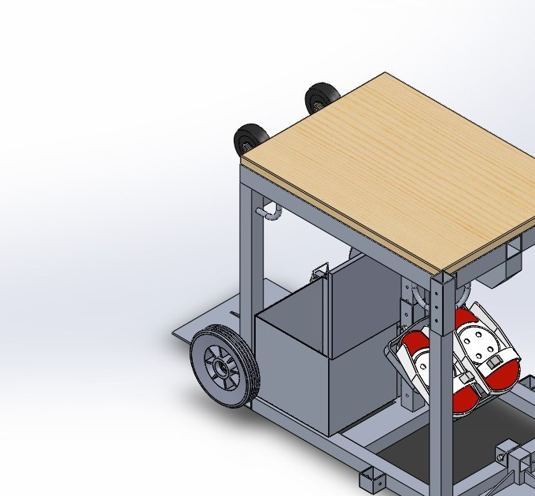
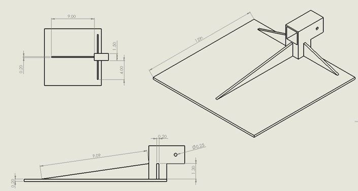

Adaptive Athletics Cart
Stabilization System
Virtual design of removable support components for a shot-put equipment cart, developed to address rocking and tipping concerns.

CAD view from the original academic project presentation. The complete cart was a broader group project; my stated individual contribution was the virtual stabilization support design.
Design objective
Develop a removable support system intended to reduce rocking and tipping when the athletics cart is used without conventional straps or anchoring.
The original project also considered equipment storage; this case study focuses on my stabilization system work.
CAD design
I created the stabilization support system virtually from scratch in SolidWorks. The design includes base pads, triangular reinforcing ribs and mounting features for integration with the cart frame.
The team presentation describes front and rear pad placement, a nominal pad area of 1 ft² each and an estimated weight of 3.25 lb per pad. These are reported design specifications, not independently verified physical measurements.
Design evidence


Engineering considerations
Stability: widening the ground contact footprint was intended to resist rocking and tipping.
Stiffness: triangular ribs were included to support the pad geometry.
Practicality: detachable supports were proposed for transportation and storage.
Validation & limitations
The available materials document a virtual CAD concept and design intent. The system was not physically manufactured or tested by me. I am not claiming measured improvements in tipping resistance or completed FEA validation.
A useful next step would be a documented free-body tipping calculation and a clearly labelled analytical assessment of the support footprint.